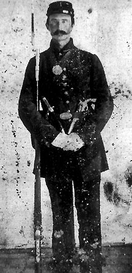

|

NAME: Llewellyn Smith
BORN: 1836
DIED: 1883
ALLEGIANCE: Union
HIGHEST RANK: Private
UNIT: 9th Maine Infantry, Company I
RECORD: Mustered into the 9th Maine Infantry on
September 22, 1861. Captured at Bermuda Hundred, Virginia,
on August 25, 1864. Incarcerated at Belle Isle Prison until
mid-September and at Libby Prison until October. Mustered
out on July 13, 1865.
|
|
A small town not far from Bangor, Maine, Carmel was a
tranquil place populated by farmers who had little time for
anything besides farming--until the Civil War erupted.
Llewellyn Smith and other sons of Carmel put away their
plows and took up rifles. The 25-year-old Smith was mustered
into the 9th Maine Infantry, Company I, on September 22. Two
days later, the farmers were on their way south as soldiers.
At left, Smith stands stoically with his Springfield rifle
musket. The knife and revolver in his belt are probably
props supplied by the photographer; few foot soldiers
carried such weapons.
Almost immediately, the 9th Maine was assigned to Brigadier
General Thomas W. Sherman's South Carolina Expeditionary
Corps. Smith saw his first action in the Union capture of
Port Royal. Then, after several months of quiet duty in
Florida, the Pine Tree Staters were thrown back into action
in South Carolina, where they fought desperately in three
assaults and a siege against Charleston's Battery Wagner in
July 1863. Thirty-nine men from the 9th were killed or
mortally wounded, but Smith escaped uninjured.
Early in 1864, the regiment was reassigned to the Army of
the James and joined Major General Benjamin F. Butler in his
operations outside Richmond, Virginia. More than 70 men of
the 9th Maine died during bitter fighting at Cold Harbor and
Petersburg in June. Smith survived only to be captured at
Bermuda Hundred on August 25. He spent three weeks at Belle
Isle Prison on the James River before being transferred to
Libby Prison in Richmond.
Smith stayed at Libby only a month, but the suffering that
began there would last the rest of his life. Libby Prison
was populated mostly by officers. As a private, Smith
received even fewer aids to survival than the suffering
officers. He had no bed, no blankets, and few clothes--only
a shirt and pants. In the damp Southern autumn, Smith
rapidly developed severe heart and lung infections. Paroled
in October, he went home to Carmel for a lengthy
convalescence. Although he eventually returned to his
regiment, the war was over for Smith; shortly after his
return, the men of the 9th Maine were mustered out, on July
13, 1865. A shell of his former self, Smith was still one of
the lucky ones; nearly a quarter of the 197 men of his
company never came home.
Too weak for farming, Smith became a wagon maker in Carmel.
He soon married his sweetheart, Adaline Maloon, and over the
next several years, the couple had five children. Adaline
died in 1880, and three years later, Smith succumbed to his
wartime ailments. His children were sent to the State
Military and Naval Children's Home in Bath. Even today,
Smith's descendants do not know where he was buried, only
that it was in Maine.
Source: Civil War Times Illustrated
37:7 (February 1999), 80.
|